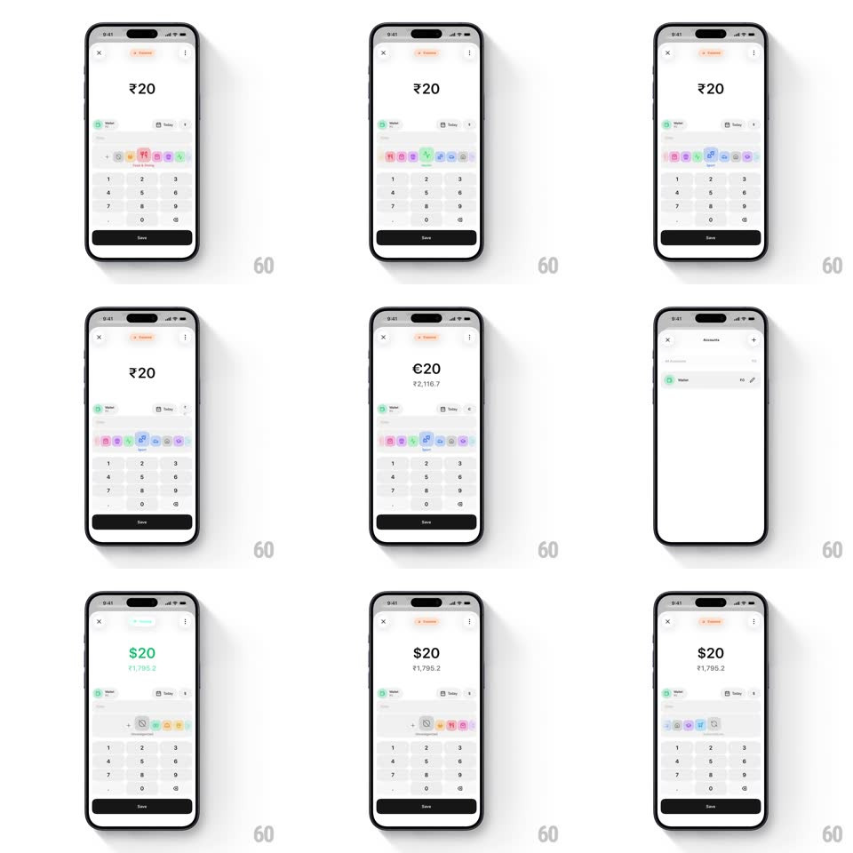

Media
Frame-by-frame

Rebuild this interaction 1:1: Qalta's transaction logger - type an amount on a keypad, flip the currency symbol in 3D to switch currency, toggle Expense/Income to recolor the amount, and pick a category from a springy horizontal icon slider.

Rebuild this interaction 1:1: Qalta's transaction logger - type an amount on a keypad, flip the currency symbol in 3D to switch currency, toggle Expense/Income to recolor the amount, and pick a category from a springy horizontal icon slider.
## Integration
An amount-entry sheet: display + custom numeric keypad, currency flip control, segmented Expense/Income toggle, horizontal category picker, Save button.
## Scene
- Top: segmented toggle pill with Expense (orange) and Income (teal); Expense selected by default.
- Amount display: large "₹0" that updates as digits are typed ("₹20"); beneath it the converted value appears when the currency flips.
- Currency control: the currency symbol flips in 3D (₹ → $) to switch currency.
- Category slider: horizontal scrollable row of category icons; the selected category enlarges.
- Bottom: numeric keypad and a Save button.
## Motion spec
Pattern: 3D rolling currency flip, springy category slider, expense/income toggle.
- Keypad entry: digits append to the amount instantly; the amount text scales up ~4% on each keystroke and settles back (~150ms).
- Currency flip: tapping the symbol rotates it 180deg around the X axis (rotateX 0 → -180deg, ~400ms, ease-in-out); the new symbol appears at the 90deg mark; the converted value fades in beneath the amount.
- Toggle: the pill's indicator slides to the tapped segment (~250ms, spring); the amount color switches black (expense) → teal (income) with a 200ms color transition.
- Category slider: drag/scroll with momentum; on selection the icon scales 1.0 → 1.2 with a spring (~300ms, overshoot) while the previous selection scales back; the row recenters the selected icon.
- Save: button scales to 0.96 on touch-down and back on release.
## Calibration
- Currency flip: 400ms rotateX, ease-in-out.
- Toggle slide: 250ms spring; color transition 200ms.
- Category select: 300ms spring to 1.2x scale; recenter 300ms.
- Keystroke scale bump: 150ms.
## Reduced motion
Currency changes crossfade (150ms) instead of the 3D flip; toggle and slider changes apply instantly without springs.
## Don't miss
- The currency flip is a true 3D rotateX roll - the symbol reads mirrored mid-flip.
- The converted value appears under the amount after the flip, not before.
- Expense/Income isn't just a label change - the amount's color flips with it.